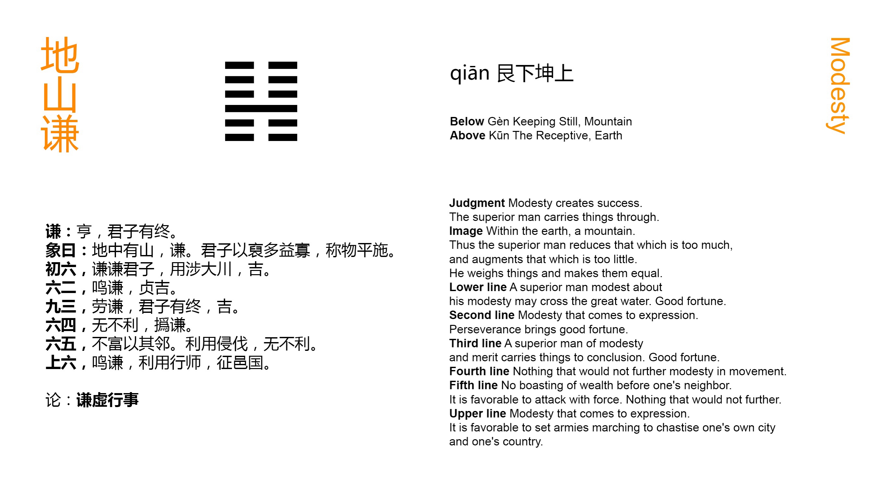

Chinese: 谦 ䷎ qiān

Qiān ䷎ indicates progress and success. The superior man, (being humble as it implies), will have a (good) issue (to his undertakings).
1. The first SIX, divided, shows us the superior man who adds humility to humility. (Even) the great stream may be crossed with this, and there will be good fortune.
䷎ changing to ䷣
Matching Line 1 in Adjacent Hexagram: ䷏
2. The second SIX, divided, shows us humility that has made itself recognised. With firm correctness there will be good fortune.
䷎ changing to ䷭
Matching Line 2 in Adjacent Hexagram: ䷏
3. The third NINE, undivided, shows the superior man of (acknowledged) merit. He will maintain his success to the end, and have good fortune.
䷎ changing to ䷁
Matching Line 3 in Adjacent Hexagram: ䷏
4. The fourth SIX, divided, shows one, whose action would be in every way advantageous, stirring up (the more) his humility.
䷎ changing to ䷽
Matching Line 4 in Adjacent Hexagram: ䷏
5. The fifth SIX, divided, shows one who, without being rich, is able to employ his neighbours. He may advantageously use the force of arms. All his movements will be advantageous.
䷎ changing to ䷦
Matching Line 5 in Adjacent Hexagram: ䷏
6. The sixth SIX, divided, shows us humility that has made itself recognised. The subject of it will with advantage put his hosts in motion; but (he will only) punish his own towns and state.
䷎ changing to ䷳
Matching Line 6 in Adjacent Hexagram: ䷏
An essay on humility rightly follows that on abundant possessions. The third line, which is a whole line amid five others divided, occupying the topmost place in the lower trigram, is held by the Kāng Xī editors and many others to be 'the lord of the hexagram,' the representative of humility, strong, but abasing itself. There is nothing here in the text to make us enter farther on the symbolism of the figure. Humility is the way to permanent success.
A weak line, at the lowest place of the figure, is the fitting symbol of the superior man adding humility to humility.
Line 2 is weak, central, and in its proper place, representing a humility that has 'crowed;' that is, has proclaimed itself.
Line 3 is strong, and occupies an odd (its proper) place. It is 'the lord of the hexagram,' to whom all represented by the lines above and below turn.
Line 4 is weak and in its proper position. Its subject is sure to p. 91 be successful and prosperous, but being so near the fifth line, he should still use the greatest precaution.
All men love and honour humility, in itself and without the adjuncts which usually command obedience and respect. Hence his neighbours follow the ruler in the fifth line, though he may not be very rich or powerful. His humility need not keep him from asserting the right, even by force of arms.
The subject of the sixth line, which is weak, is outside the game, so to speak, that has been played out. He will use force, but only within his own sphere and to assert what is right. He will not be aggressive.